<!DOCTYPE html>
<html lang="en">
<head>
  <meta charset="UTF-8">
  <meta name="viewport" content="width=device-width, initial-scale=1, viewport-fit=cover">
  <title>Childhood Trauma Test (ACES Test) – Discover the Impact & Begin Healing</title>
  <link rel="icon" href="favicon.ico">
  <link rel="preconnect" href="https://fonts.googleapis.com">
  <link rel="preconnect" href="https://fonts.gstatic.com" crossorigin>
  <link href="https://fonts.googleapis.com/css2?family=Poppins:wght@400;500;600;700;800&display=swap" rel="stylesheet">
  <style>
    :root {
      --bg: #0F1018;
      --accent: #5ACFB3;
      --card: #191C2D;
      --progress-bg: #252535;
      --text: #FAFAFA;
      --text-muted: #8E92AF;
      --btn-bg: #252535;
      --btn-hover: #2E3048;
      --btn-sel-bg: rgba(90,207,179,0.12);
      --btn-sel-border: #5ACFB3;
    }
    *, *::before, *::after { box-sizing: border-box; margin: 0; padding: 0; }
    body {
      background: var(--bg) url('assets/bg_audio.ec4a8525.webp') center 0 / 100% auto no-repeat;
      min-height: 100vh;
      font-family: 'Poppins', -apple-system, sans-serif;
      color: var(--text);
      -webkit-font-smoothing: antialiased;
      overflow-x: hidden;
    }
    #app {
      max-width: 450px;
      margin: 0 auto;
      min-height: 100vh;
      display: flex;
      flex-direction: column;
      padding: 0 16px 60px;
    }
    .screen { animation: fadeIn .22s ease; }
    @keyframes fadeIn { from{opacity:0;transform:translateY(8px)} to{opacity:1;transform:none} }

    /* HEADER */
    .quiz-header { display:flex; justify-content:center; padding:20px 0 0; }
    .logo-text { font-size:17px; font-weight:800; letter-spacing:.5px; color:var(--accent); }

    /* PROGRESS BAR */
    .progress-wrap { width:85%; max-width:333px; margin:40px auto 0; }
    .progress-track { position:relative; display:flex; width:100%; height:3px; background:var(--progress-bg); border-radius:3px; align-items:center; }
    .p-section { position:relative; flex:1; height:3px; }
    .p-fill { position:absolute; top:0; left:0; height:3px; background:var(--accent); border-radius:3px; transition:width .35s ease; }
    .p-circle { position:absolute; right:-9px; top:50%; transform:translateY(-50%); width:18px; height:18px; border-radius:50%; display:flex; align-items:center; justify-content:center; font-size:10px; font-weight:700; z-index:2; }
    .p-circle.done   { background:var(--accent); color:#0F1018; }
    .p-circle.active { background:var(--accent); color:#0F1018; width:20px; height:20px; right:-10px; }
    .p-circle.next   { background:var(--progress-bg); color:var(--text-muted); border:1.5px solid rgba(255,255,255,.15); }
    .p-label { position:absolute; top:-22px; left:50%; transform:translateX(-50%); white-space:nowrap; font-size:11px; font-weight:600; color:var(--accent); }

    /* BACK */
    .back-btn { background:none; border:none; color:var(--text-muted); font-family:inherit; font-size:14px; cursor:pointer; padding:10px 0 0; display:flex; align-items:center; gap:5px; align-self:flex-start; }
    .back-btn:hover { color:var(--text); }

    /* PRE-QUIZ */
    .prescreen { display:flex; flex-direction:column; align-items:center; padding:48px 0 32px; gap:22px; }
    .prescreen-title { font-size:26px; font-weight:700; line-height:32px; letter-spacing:-.5px; text-align:center; }
    .prescreen-img { width:100%; max-width:320px; border-radius:18px; object-fit:cover; max-height:200px; }
    .gender-grid { display:grid; grid-template-columns:1fr 1fr; gap:12px; width:100%; }
    .gender-btn { background:var(--btn-bg); border:1.5px solid rgba(255,255,255,.08); border-radius:14px; color:var(--text); font-family:inherit; font-size:16px; font-weight:500; padding:20px 12px; cursor:pointer; text-align:center; transition:border-color .15s,background .15s; }
    .gender-btn:hover { background:var(--btn-hover); }
    .gender-btn.selected { background:var(--btn-sel-bg); border-color:var(--btn-sel-border); color:var(--accent); }
    .age-grid { display:grid; grid-template-columns:1fr 1fr; gap:12px 8px; width:100%; }
    .age-btn { background:var(--btn-bg); border:1.5px solid rgba(255,255,255,.08); border-radius:14px; color:var(--text); font-family:inherit; font-size:16px; font-weight:500; padding:17px 12px; cursor:pointer; transition:border-color .15s,background .15s; }
    .age-btn:hover { background:var(--btn-hover); }
    .age-btn.selected { background:var(--btn-sel-bg); border-color:var(--btn-sel-border); color:var(--accent); }

    /* QUESTION */
    .question-area { display:flex; flex-direction:column; align-items:center; padding:22px 0 16px; gap:18px; width:100%; }
    .question-text { font-size:22px; font-weight:700; line-height:28px; letter-spacing:-.4px; text-align:center; width:100%; }
    .question-image { width:100%; max-width:320px; border-radius:18px; object-fit:cover; max-height:210px; }
    .answers { display:flex; flex-direction:column; gap:10px; width:100%; }
    .answer-btn { background:var(--btn-bg); border:1.5px solid rgba(255,255,255,.08); border-radius:14px; color:var(--text); font-family:inherit; font-size:16px; font-weight:500; line-height:22px; padding:16px 20px; cursor:pointer; text-align:left; transition:border-color .15s,background .15s,transform .1s; width:100%; }
    .answer-btn:hover { background:var(--btn-hover); transform:translateY(-1px); }
    .answer-btn:active { transform:translateY(0); }

    /* STATEMENT */
    .statement-card { background:var(--card); border-radius:16px; padding:18px 20px; width:100%; font-size:16px; line-height:24px; color:var(--text); border-left:3px solid var(--accent); }
    .statement-card em { font-style:italic; color:#fff; font-weight:600; }
    .statement-label { font-size:13px; color:var(--text-muted); font-weight:500; text-align:center; }

    /* DISCLAIMER */
    .disclaimer-card { background:var(--card); border-radius:14px; padding:16px 20px; font-size:14px; line-height:22px; color:var(--text-muted); text-align:center; width:100%; }

    /* AUDIO PLAYER */
    .audio-player { display:flex; align-items:center; gap:16px; background:var(--card); border-radius:20px; padding:16px 20px; width:100%; }
    .play-btn { width:52px; height:52px; border-radius:50%; flex-shrink:0; background:var(--accent); border:none; cursor:pointer; display:flex; align-items:center; justify-content:center; transition:transform .15s,opacity .15s; position:relative; }
    .play-btn::before { content:''; position:absolute; inset:0; border-radius:50%; background:rgba(90,207,179,.3); animation:pulse 2s ease-out infinite; }
    @keyframes pulse { 0%{transform:scale(1);opacity:.6} 100%{transform:scale(1.7);opacity:0} }
    .play-btn svg { position:relative; z-index:1; }
    .play-btn.playing .play-icon { display:none; }
    .play-btn.playing .pause-icon { display:block; }
    .pause-icon { display:none; }
    .waveform { display:flex; align-items:center; gap:3px; flex:1; height:44px; }
    .wave-bar { flex:1; border-radius:3px; background:#8E92AF; }
    .waveform.playing .wave-bar { animation:waveBounce .6s ease-in-out infinite alternate; background:var(--accent); }
    .wave-bar:nth-child(2n){ animation-delay:.1s; }
    .wave-bar:nth-child(3n){ animation-delay:.2s; }
    .wave-bar:nth-child(4n){ animation-delay:.05s; }
    .wave-bar:nth-child(5n){ animation-delay:.15s; }
    @keyframes waveBounce { from{transform:scaleY(.4)} to{transform:scaleY(1)} }
    .skip-audio-btn { background:none; border:none; color:var(--text-muted); font-family:inherit; font-size:14px; cursor:pointer; text-decoration:underline; }
    .skip-audio-btn:hover { color:var(--text); }

    /* TRANSITION */
    .transition-screen { display:flex; flex-direction:column; align-items:center; padding:60px 0 32px; gap:20px; text-align:center; }
    .transition-icon { font-size:48px; }
    .transition-title { font-size:24px; font-weight:700; letter-spacing:-.4px; }
    .transition-text { font-size:15px; color:var(--text-muted); line-height:22px; max-width:300px; }
    .transition-btn { background:var(--accent); color:#0F1018; border:none; border-radius:14px; font-family:inherit; font-size:16px; font-weight:700; padding:16px 40px; cursor:pointer; margin-top:8px; transition:opacity .15s,transform .1s; }
    .transition-btn:hover { opacity:.9; transform:translateY(-1px); }

    /* LOADING */
    .loading-screen { display:flex; flex-direction:column; align-items:center; justify-content:center; min-height:100vh; gap:28px; padding:20px; text-align:center; }
    .loading-title { font-size:24px; font-weight:700; letter-spacing:-.4px; }
    .loading-sub { font-size:14px; color:var(--text-muted); line-height:22px; max-width:280px; }
    .loading-bar-wrap { width:100%; max-width:280px; height:6px; background:var(--progress-bg); border-radius:6px; overflow:hidden; }
    .loading-bar { height:6px; background:var(--accent); border-radius:6px; width:0%; animation:loadProg 3.4s ease forwards; }
    @keyframes loadProg { from{width:0%} to{width:100%} }
    .loading-steps { display:flex; flex-direction:column; gap:14px; width:100%; max-width:280px; text-align:left; }
    .lstep { display:flex; align-items:center; gap:10px; font-size:14px; color:var(--text-muted); opacity:0; transition:opacity .4s; }
    .lstep.on { opacity:1; color:var(--text); }
    .lstep-dot { width:8px; height:8px; border-radius:50%; background:var(--progress-bg); flex-shrink:0; transition:background .3s; }
    .lstep.on .lstep-dot { background:var(--accent); }

    /* RESULTS */
    .results-screen { display:flex; flex-direction:column; align-items:center; padding:40px 0 80px; gap:24px; width:100%; }
    .results-badge { background:rgba(90,207,179,.12); border:1px solid rgba(90,207,179,.3); border-radius:24px; padding:6px 16px; font-size:13px; font-weight:600; color:var(--accent); letter-spacing:.3px; }
    .results-title { font-size:26px; font-weight:800; line-height:32px; letter-spacing:-.5px; text-align:center; }
    .results-sub { font-size:14px; color:var(--text-muted); text-align:center; line-height:20px; }
    .results-graph { width:100%; border-radius:18px; }
    .score-row { display:flex; flex-direction:column; gap:14px; width:100%; }
    .score-item { display:flex; flex-direction:column; gap:6px; }
    .score-label-row { display:flex; justify-content:space-between; }
    .score-label { font-size:13px; font-weight:600; color:var(--text-muted); }
    .score-val   { font-size:13px; font-weight:700; color:var(--accent); }
    .score-track { width:100%; height:6px; background:var(--progress-bg); border-radius:6px; overflow:hidden; }
    .score-fill  { height:6px; background:var(--accent); border-radius:6px; transition:width 1s ease; }
    .divider { width:100%; height:1px; background:rgba(255,255,255,.07); }
    .experts-section { display:flex; flex-direction:column; gap:16px; width:100%; }
    .experts-title { font-size:12px; font-weight:600; color:var(--text-muted); text-align:center; text-transform:uppercase; letter-spacing:1px; }
    .experts-row { display:flex; gap:14px; }
    .expert-card { flex:1; background:var(--card); border-radius:14px; padding:14px; display:flex; flex-direction:column; align-items:center; gap:8px; }
    .expert-img { width:56px; height:56px; border-radius:50%; object-fit:cover; }
    .expert-name { font-size:12px; font-weight:700; text-align:center; }
    .expert-role { font-size:11px; color:var(--text-muted); text-align:center; }
    .uni-row { display:flex; justify-content:center; gap:24px; align-items:center; }
    .uni-logo { height:26px; opacity:.65; object-fit:contain; }
    .end-section { position:relative; width:100%; border-radius:20px; overflow:hidden; background:var(--card); padding:28px 20px; display:flex; flex-direction:column; align-items:center; gap:16px; }
    .end-bg { position:absolute; inset:0; width:100%; height:100%; object-fit:cover; opacity:.25; }
    .end-glare { position:absolute; top:0; right:0; width:60%; pointer-events:none; opacity:.5; }
    .end-content { position:relative; z-index:1; display:flex; flex-direction:column; align-items:center; gap:14px; width:100%; }
    .end-phones { display:flex; gap:12px; justify-content:center; }
    .end-phone { width:42%; max-width:150px; border-radius:14px; object-fit:cover; }
    .end-title { font-size:22px; font-weight:800; text-align:center; line-height:28px; }
    .end-sub { font-size:14px; color:var(--text-muted); text-align:center; line-height:20px; }
    .cta-section { display:flex; flex-direction:column; align-items:center; gap:12px; width:100%; }
    .cta-caption { font-size:19px; font-weight:700; text-align:center; line-height:26px; }
    .cta-btn { display:block; width:100%; max-width:380px; background:var(--accent); color:#0F1018; border:none; border-radius:18px; font-family:inherit; font-size:17px; font-weight:700; padding:18px 24px; text-align:center; text-decoration:none; cursor:pointer; transition:opacity .15s,transform .1s; }
    .cta-btn:hover { opacity:.9; transform:translateY(-1px); }
    .cta-note { font-size:12px; color:var(--text-muted); text-align:center; }
  </style>
</head>
<body>
<div id="app"></div>
<audio id="quiz-audio" src="assets/audio_01.mp3" preload="auto"></audio>

<script>
const SECTIONS = ['Your history', 'Tendencies', 'Struggles signs', 'Final Question'];

const FLOW = [
  { type:'gender' },
  { type:'age' },

  // Section 0: Your history
  { type:'question', section:0, text:'In your childhood, your parents were...', answers:[
    {text:'Happily married',score:0},{text:'Unhappily married',score:1},{text:'Divorced',score:2},
    {text:'I had only one parent',score:1},{text:'I had no parents',score:2}]},
  { type:'question', section:0, text:'How can you describe the environment you were growing up in?', answers:[
    {text:'Nurturing and supportive',score:0},{text:'Chaotic and unpredictable',score:2},
    {text:'Unstable and unsafe',score:2},{text:'Challenging and demanding',score:1},
    {text:'Economic hardship and scarcity',score:1},{text:'Neglectful and lonely',score:2}]},
  { type:'question', section:0, text:'Which memories from your childhood are prevalent?',
    image:'assets/question_3_with_image.d615f347.webp', answers:[
    {text:'Positive',score:0},{text:'Negative',score:2},
    {text:"I don't remember my childhood",score:2},{text:'Not sure',score:1}]},
  { type:'question', section:0, text:'What situations trigger emotional reactions or flashbacks from your past?', answers:[
    {text:'Those relating to any abuse',score:2},{text:'When my feelings are neglected',score:2},
    {text:'When feeling helpless',score:2},{text:'When feeling trapped',score:2},
    {text:'Those related to loss',score:1}]},
  { type:'question', section:0, text:'What do you see first?',
    image:'assets/question_with_image_home_horse.e1ce2bda.webp', answers:[
    {text:'Child',score:1},{text:'Eye',score:2},{text:'Home',score:0},{text:'Horse',score:0}]},

  { type:'transition', icon:'🧠', title:'Processing your history...', btn:'Continue',
    text:"Your early experiences shape so much of who you are today. Let's look at your emotional tendencies." },

  // Section 1: Tendencies
  { type:'question', section:1, text:'Which situations can trigger strong emotional reactions that feel hard to control?',
    image:'assets/question_5_with_image_male.fd0392b6.webp', answers:[
    {text:'Abuse or mistreatment',score:2},{text:'Neglect or abandonment',score:2},{text:'Other',score:1}]},
  { type:'question', section:1, text:'Have you ever felt depressed when growing up?',
    image:'assets/question_6_with_image.670b1ff8.webp', answers:[
    {text:'Yes',score:2},{text:'No',score:0},{text:'A couple of times',score:1}]},
  { type:'question', section:1, text:'Do you tend to cope with difficult emotions or memories by engaging in substance abuse, reckless driving, or the like?', answers:[
    {text:'Yes',score:2},{text:'No',score:0},{text:'Sometimes',score:1}]},
  { type:'question', section:1, text:'How long have you been feeling this way?', answers:[
    {text:'The last few weeks',score:0},{text:'In recent months',score:1},
    {text:'A few years',score:2},{text:'My whole life',score:2}]},
  { type:'statement', section:1, label:'Can you relate to this statement?',
    statement:'"I have to get things \'right,\' and I\'m tough on myself when I don\'t."', answers:[
    {text:'Strongly relate',score:2},{text:'Somewhat relate',score:1},
    {text:'Hardly relate',score:0},{text:"Can't relate",score:0}]},
  { type:'audio', section:1,
    disclaimer:"You're about to hear a short sound.\nIt may feel unusual or slightly uncomfortable.",
    text:'What do you hear first?', answers:[
    {text:'Please stop',score:2},{text:'Breeze mom',score:0},
    {text:"Don't break it",score:1},{text:'Stop raging',score:2}]},

  { type:'transition', icon:'💭', title:'Interesting patterns emerging...', btn:'Continue',
    text:"We're starting to see how your past shapes your present. Let's explore the signs more deeply." },

  // Section 2: Struggles signs
  { type:'question', section:2, text:'What do you see first?',
    image:'assets/question_with_image_shark_leg.c9708474.webp', answers:[
    {text:'Shark',score:2},{text:'A leg',score:0},{text:'A mysterious woman',score:1},{text:'A woman',score:0}]},
  { type:'question', section:2, text:'What do you see first?',
    image:'assets/question_with_image_people_monster.04f02533.webp', answers:[
    {text:'Two people',score:0},{text:'Monster face',score:2},{text:'Two children',score:1}]},
  { type:'question', section:2, text:'In your relationships with others you often...',
    image:'assets/question_11_with_image.a87c9d43.webp', answers:[
    {text:'Keep the distance',score:2},{text:'Easily open after knowing someone',score:0},
    {text:'Try not to get attached',score:2},{text:'Attach too quickly',score:1}]},
  { type:'question', section:2, text:'What do you feel when seeing some children receive what you lacked in childhood?',
    image:'assets/question_9_with_image.52ef51b0.webp', answers:[
    {text:'Sadness',score:2},{text:'Grief',score:2},{text:'Anger',score:2},
    {text:'Nothing in particular',score:0},{text:"I didn't feel any lack",score:0}]},
  { type:'question', section:2, text:'Have you ever struggled with a fear of being judged or rejected by others?', answers:[
    {text:'Yes',score:2},{text:'No',score:0},{text:'Sometimes',score:1}]},
  { type:'question', section:2, text:'Does this reflect how you feel now or in the past?',
    image:'assets/question_with_image_feel_now_or_past.e22a6992.webp', answers:[
    {text:'Now',score:2},{text:'In the past',score:1},{text:'Both',score:2},{text:'Neither',score:0}]},
  { type:'statement', section:2, label:'Can you relate to this statement?',
    statement:'"I often feel like there is a delay between my feelings and my ability to put them into words."', answers:[
    {text:'Strongly relate',score:2},{text:'Somewhat relate',score:1},
    {text:'Hardly relate',score:0},{text:"Can't relate",score:0}]},

  { type:'transition', icon:'🌱', title:'Almost there...', btn:'Last section →',
    text:"You're doing great. These final questions will help us build your personalized healing plan." },

  // Section 3: Final Question
  { type:'question', section:3, text:'What is your first emotion when looking at this?',
    image:'assets/question_with_image_first_emotion.80c10396.webp', answers:[
    {text:'Sadness',score:2},{text:'Fear',score:2},{text:'Anger',score:2},
    {text:'Compassion',score:1},{text:'Happiness',score:0},{text:'Numbness',score:2}]},
  { type:'question', section:3, text:'What do you feel when you look at this?',
    image:'assets/question_with_image_what_do_you_feel.b6c10d9d.webp', answers:[
    {text:'Sadness or anger',score:2},{text:'Happiness',score:0},
    {text:'Fear',score:2},{text:'Compassion',score:1},{text:'Numbness',score:2}]},
  { type:'question', section:3, text:'How does your inner child feel?',
    image:'assets/question_with_image_child_eye.63ed3be8.webp', answers:[
    {text:'Happy',score:0},{text:'Angry',score:2},{text:'Scared',score:2},{text:'Crying',score:2}]},
  { type:'question', section:3, text:'What do you expect to get out of healing your childhood trauma?', answers:[
    {text:'Improve my love life',score:0},{text:'Enhance overall happiness',score:0},
    {text:'Learn to express myself',score:0},{text:'Improve my career',score:0},
    {text:'Reconnect with my parents',score:0},{text:'Learn to set boundaries',score:0},
    {text:'Accept myself as I am',score:0}]},
  { type:'question', section:3, text:'How much time are you willing to dedicate to a personalized plan to heal your childhood trauma?', answers:[
    {text:'2 weeks',score:0},{text:'1 month',score:0},{text:'2–3 months',score:0},
    {text:'6 months',score:0},{text:"I don't want to heal it",score:0}]},
];

// State
const state = { idx:0, gender:null, age:null, scores:{}, showResults:false, showLoading:false };

function isQ(item) { return item && ['question','statement','audio'].includes(item.type); }

function sectionProgress(s) {
  const items = FLOW.filter(f => isQ(f) && f.section === s);
  if (!items.length) return 0;
  const firstI = FLOW.findIndex(f => isQ(f) && f.section === s);
  let done = 0;
  for (let i = firstI; i < state.idx; i++) if (isQ(FLOW[i]) && FLOW[i].section === s) done++;
  return done / items.length;
}

function categoryScores() {
  const qIdxs = FLOW.map((f,i) => isQ(f) ? i : -1).filter(i => i >= 0);
  const cats = [
    {label:'Emotional Dysregulation',    pos:[3,4,6,8]},
    {label:'Identity Disturbance',       pos:[1,2,10]},
    {label:'Impulsive Behaviours',       pos:[5,7]},
    {label:'Interpersonal Relationship', pos:[11,12]},
  ];
  return cats.map(cat => {
    let total=0, got=0;
    cat.pos.forEach(p => {
      const fi = qIdxs[p];
      if (fi !== undefined && FLOW[fi]) {
        total += Math.max(...FLOW[fi].answers.map(a=>a.score));
        got   += (state.scores[fi] || 0);
      }
    });
    return {label:cat.label, pct: total>0 ? Math.round(got/total*100) : 45};
  });
}

function render() {
  const app = document.getElementById('app');
  if (state.showLoading) { app.innerHTML = renderLoading(); startLoadingAnim(); return; }
  if (state.showResults) { app.innerHTML = renderResults(); startScoreAnim(); return; }
  const item = FLOW[state.idx];
  if (!item) return;
  switch(item.type) {
    case 'gender':     app.innerHTML = renderGender(); break;
    case 'age':        app.innerHTML = renderAge(); break;
    case 'question':   app.innerHTML = renderQuestion(item); break;
    case 'statement':  app.innerHTML = renderStatement(item); break;
    case 'audio':      app.innerHTML = renderAudio(item); break;
    case 'transition': app.innerHTML = renderTransition(item); break;
  }
}

function hdr() { return `<div class="quiz-header"><span class="logo-text">breeze</span></div>`; }
function back() { return `<button class="back-btn" onclick="goBack()">← Back</button>`; }

function renderProgress(s) {
  return `<div class="progress-wrap"><div class="progress-track">
    ${SECTIONS.map((lbl,i) => {
      const prog = i<s ? 100 : (i===s ? Math.round(sectionProgress(i)*100) : 0);
      const cls  = i<s ? 'done' : (i===s ? 'active' : 'next');
      const dot  = i<s ? '✓' : (i===s ? '' : i+1);
      return `<div class="p-section">${i===s?`<div class="p-label">${lbl}</div>`:''}
        <div class="p-fill" style="width:${prog}%"></div>
        <div class="p-circle ${cls}">${dot}</div></div>`;
    }).join('')}
  </div></div>`;
}

function renderGender() {
  return `<div class="screen">${hdr()}<div class="prescreen">
    <div class="prescreen-title">What's your gender?</div>
    <div class="gender-grid">${['Female','Male','Non-binary','Other'].map(g=>
      `<button class="gender-btn${state.gender===g?' selected':''}" onclick="pickGender('${g}')">${g}</button>`).join('')}
    </div></div></div>`;
}

function renderAge() {
  return `<div class="screen">${hdr()}<div class="prescreen">
    ${back()}
    <div class="prescreen-title">How old are you?</div>
    
    <div class="age-grid">${['16–17','18–21','22–25','26–35','36–45','46–55','56+'].map(a=>
      `<button class="age-btn${state.age===a?' selected':''}" onclick="pickAge('${a}')">${a}</button>`).join('')}
    </div></div></div>`;
}

function renderQuestion(item) {
  return `<div class="screen">${renderProgress(item.section)}${back()}
  <div class="question-area">
    <div class="question-text">${item.text}</div>
    ${item.image?``:''}
    <div class="answers">${item.answers.map((a,i)=>
      `<button class="answer-btn" onclick="pickAnswer(${i})">${a.text}</button>`).join('')}
    </div></div></div>`;
}

function renderStatement(item) {
  return `<div class="screen">${renderProgress(item.section)}${back()}
  <div class="question-area">
    <div class="statement-label">${item.label}</div>
    <div class="statement-card"><em>${item.statement}</em></div>
    <div class="answers">${item.answers.map((a,i)=>
      `<button class="answer-btn" onclick="pickAnswer(${i})">${a.text}</button>`).join('')}
    </div></div></div>`;
}

function renderAudio(item) {
  const h = [18,14,36,32,12,28,10,44,40,12,22,10,32,22,12,18,10,10,20,12,14,10,18,8,12,22,10,32,28,12,22,10,28,12,22,10];
  return `<div class="screen">${renderProgress(item.section)}${back()}
  <div class="question-area">
    <div class="disclaimer-card">${item.disclaimer.replace('\n','<br>')}</div>
    <div class="audio-player">
      <button class="play-btn" id="play-btn" onclick="toggleAudio()">
        <svg class="play-icon" width="20" height="22" viewBox="0 0 26 28" fill="none">
          <path d="M3.34 27.37C2.73 27.37 2.22 27.15 1.82 26.7C1.42 26.24 1.22 25.64 1.22 24.88V2.89C1.22 2.13 1.42 1.53 1.82 1.08C2.22 .63 2.73 .41 3.34 .41C3.67 .41 3.99 .46 4.28 .58C4.59 .69 4.92 .84 5.27 1.04L23.45 11.57C24.12 11.95 24.6 12.31 24.88 12.65C25.17 12.99 25.32 13.4 25.32 13.88C25.32 14.37 25.17 14.78 24.88 15.12C24.6 15.46 24.12 15.82 23.45 16.21L5.27 26.73C4.92 26.93 4.59 27.09 4.28 27.21C3.99 27.32 3.67 27.37 3.34 27.37Z" fill="#FAFAFA"/>
        </svg>
        <svg class="pause-icon" width="20" height="22" viewBox="0 0 24 24" fill="none">
          <rect x="5" y="3" width="4" height="18" rx="2" fill="#FAFAFA"/>
          <rect x="15" y="3" width="4" height="18" rx="2" fill="#FAFAFA"/>
        </svg>
      </button>
      <div class="waveform" id="waveform">
        ${h.map(px=>`<div class="wave-bar" style="height:${px}px"></div>`).join('')}
      </div>
    </div>
    <div class="question-text">${item.text}</div>
    <div class="answers">${item.answers.map((a,i)=>
      `<button class="answer-btn" onclick="pickAnswer(${i})">${a.text}</button>`).join('')}
    </div>
    <button class="skip-audio-btn" onclick="pickAnswer(0)">Continue without sound</button>
  </div></div>`;
}

function renderTransition(item) {
  return `<div class="screen">${hdr()}
  <div class="transition-screen">
    <div class="transition-icon">${item.icon}</div>
    <div class="transition-title">${item.title}</div>
    <div class="transition-text">${item.text}</div>
    <button class="transition-btn" onclick="advance()">${item.btn}</button>
  </div></div>`;
}

function renderLoading() {
  return `<div class="screen loading-screen">
  <div class="loading-title">Analyzing your answers...</div>
  <div class="loading-sub">Building your personalized childhood trauma assessment</div>
  <div class="loading-bar-wrap"><div class="loading-bar"></div></div>
  <div class="loading-steps">
    ${['Reviewing childhood patterns','Mapping emotional tendencies','Evaluating relationship signs','Preparing your personal plan']
      .map((s,i)=>`<div class="lstep" id="ls${i}"><div class="lstep-dot"></div><span>${s}</span></div>`).join('')}
  </div></div>`;
}

function renderResults() {
  const cats = categoryScores();
  return `<div class="screen results-screen">
  <div class="results-badge">Your results are ready</div>
  <div class="results-title">Your Personalized Healing Plan</div>
  <div class="results-sub">Based on your answers, we've identified key areas where childhood experiences are affecting your life today.</div>
  
  <div class="score-row">${cats.map(c=>`
    <div class="score-item">
      <div class="score-label-row"><span class="score-label">${c.label}</span><span class="score-val">${c.pct}%</span></div>
      <div class="score-track"><div class="score-fill" data-pct="${c.pct}" style="width:0%"></div></div>
    </div>`).join('')}
  </div>
  <div class="divider"></div>
  <div class="experts-section">
    <div class="experts-title">Reviewed by our experts</div>
    <div class="experts-row">
      <div class="expert-card">
        
        <div class="expert-name">Jessica Reynolds</div><div class="expert-role">Clinical Psychologist</div>
      </div>
      <div class="expert-card">
        
        <div class="expert-name">Mei Lin Chen</div><div class="expert-role">Trauma Therapist</div>
      </div>
    </div>
    <div class="uni-row">
      
      
    </div>
  </div>
  <div class="divider"></div>
  <div class="end-section">
    
    
    <div class="end-content">
      <div class="end-phones">
        
        
      </div>
      <div class="end-title">Start healing today</div>
      <div class="end-sub">Your personalized plan is ready. Begin your journey to recovery with expert-backed guidance.</div>
    </div>
  </div>
  <div class="cta-section">
    <div class="cta-caption">Your healing plan is waiting for you</div>
    <a class="cta-btn" href="YOUR-CHECKOUT-LINK-HERE">Get My Healing Plan →</a>
    <div class="cta-note">Personalized · Science-backed · Private</div>
  </div></div>`;
}

// Interactions
function pickGender(g) { state.gender=g; render(); setTimeout(()=>{ state.idx=1; render(); },200); }
function pickAge(a)    { state.age=a;    render(); setTimeout(()=>{ state.idx=2; render(); },200); }

function pickAnswer(i) {
  state.scores[state.idx] = FLOW[state.idx].answers[i].score;
  stopAudio();
  advance();
}

function advance() {
  state.idx++;
  if (state.idx >= FLOW.length) {
    state.showLoading = true;
    render();
    setTimeout(()=>{ state.showLoading=false; state.showResults=true; render(); }, 4400);
  } else {
    render();
  }
}

function goBack() {
  if (state.showResults || state.showLoading) return;
  stopAudio();
  if (state.idx <= 0) return;
  state.idx--;
  while (state.idx > 1 && FLOW[state.idx].type === 'transition') state.idx--;
  render();
}

// Audio
function toggleAudio() {
  const audio = document.getElementById('quiz-audio');
  const btn   = document.getElementById('play-btn');
  const wave  = document.getElementById('waveform');
  if (!audio) return;
  if (audio.paused) {
    audio.play();
    btn.classList.add('playing');
    wave.classList.add('playing');
    audio.onended = ()=>{ btn.classList.remove('playing'); wave.classList.remove('playing'); };
  } else {
    audio.pause();
    btn.classList.remove('playing');
    wave.classList.remove('playing');
  }
}
function stopAudio() {
  const a = document.getElementById('quiz-audio');
  if (a && !a.paused) { a.pause(); a.currentTime=0; }
}

// Animations
function startLoadingAnim() {
  [400,1100,1900,2700].forEach((d,i)=>{
    setTimeout(()=>{ const el=document.getElementById('ls'+i); if(el) el.classList.add('on'); },d);
  });
}
function startScoreAnim() {
  setTimeout(()=>{
    document.querySelectorAll('.score-fill').forEach(el=>{ el.style.width=el.dataset.pct+'%'; });
  },200);
}

render();
</script>
</body>
</html>
